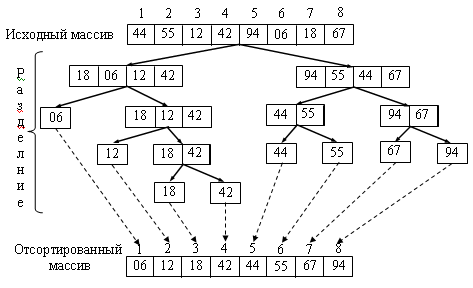
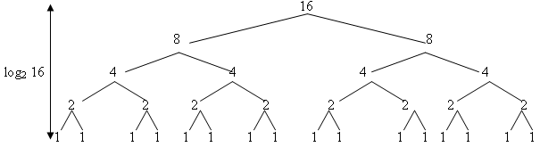
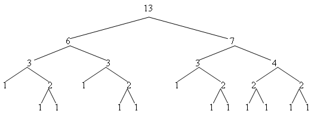

|
|
|
Нисходящая сортировка слиянием Восходящая сортировка слиянием
Двухпутевое слияние файловСортировка слиянием [5]во многом похожа на метод быстрой сортировки и также относится к алгоритмам типа O(nlogn). Если сопоставить производительность трех методов типа O(n log n), то исследования показали, что производительность сортировки слиянием лежит между производительностью пирамидальной и быстрой сортировки. Но в отличие от пирамидальной и быстрой сортировок, метод сортировки слиянием ведет себя стабильно, поскольку он не зависит от перестановок элементов в массиве. Еще одним достоинством сортировки слиянием является то, что он удобен для структур с последовательным доступом к элементам, таким как файлы на внешнем устройстве, связные списки. Этот метод, прежде всего, используется для внешней сортировки. Но метод имеет и недостатки. Он требует дополнительной памяти по объему равной объему сортируемого файла. Поэтому для больших файлов проблематично организовать сортировку слиянием в оперативной памяти. В случаях, когда гарантированное время сортировки важно и размещение в оперативной памяти, возможно, следует предпочесть метод сортировки слиянием. Сортировку слиянием можно проиллюстрировать примером: 44 55 12 42 94 18 06 67 Разобьем на первом шаге файл на два файла: 44 55 12 42 94 18 06 67 Объединим эти два файла снова в один файл, содержащий упорядоченные пары: 44 94 ’ 18 55 ’ 06 12 ’ 42 67 Снова разобьем файл и объединим пары в четверки: 44 94 ’ 18 55 06 12 ’ 42 67 Слияние дает: 06 12 44 94 ’ 18 42 55 67 Снова разобьем файл на два и объединим четверки: 06 12 44 94 18 42 55 67 Слияние дает: 06 12 18 42 44 55 67 94 Итак, основной операцией является слияние. При слиянии требуется дополнительная память для размещения файла, образующегося при слиянии. Операция линейно зависит от количества элементов в объединяемых массивах. В общем, виде можно предположить, что сливаемые файлы имеют разную размерность: A[1 .. n], B[1 .. m]. При слиянии образуется третий массив C[1 .. n+m].
Merge (A [1..n ], B [1.. m ], C [1..n+m ]) 1 i ← 1 2 j ← 1 3 for k ← 1 to n+m 4 do if i = n 5 then C [k] ← B [j] 6 j ← j + 1 7 else if j = m 8 then C [k] ← A [i] 9 i ← i + 1 10 else if A [i] < B [j] 11 then C[k] ← A[i] 12 i ← i + 1 13 else C[k] ←B [j] 14 j ←j + 1
Такая операция называется двух путевым слиянием. Операция имеет и самостоятельное значение. Например, если достаточно большой упорядоченный файл пополняется новыми элементами, то новые элементы группируются в пакеты и записываются в файл. После этого файл с новыми данными сортируется и сливается с большим файлом.
Нисходящая сортировка слияниемЭта сортировка является рекурсивной операцией, которая делит файл пополам и выполняет по рекурсии сортировку обеих половин. Дерево рекурсии выглядит следующим образом:  Рекурсия ограничена снизу размером разделяемого файла, равным 1. Каждый рекурсивный вызов делит файл пополам. В случае если размер файла кратен 2, получается полное, сбалансированное дерево рекурсии.  Если n не кратно 2, то дерево получается несбалансированным, но все равно его высота оценивается log2 n. Общий алгоритм нисходящей сортировки слиянием выглядит следующим образом: 
Merge_Sort (A [ l..r ], C[ l..r ]) 1. A [ l .. r ] – часть массива между границами l и r 2. С[ 1..n ] – вспомогательный массив размерностью n 3. if r ≤ l 4. then return 5. m ← (l + r)/2 6. Merge_Sort (A[ l..m ], C) 7. Merge_Sort (A, [ m+1..r ], C) 8. Merge (A[ l ..m..r ] , C)
Для нисходящей сортировки модифицируем процедуру слияния [ 4 ]. Вместо двух файлов она получает границы двух сливаемых частей массива А. Кроме того, результат слияния она вновь помещает в исходный массив А. Массив С используется как вспомогательный для слияния. Его размерность равна размерности массива А.
Merge ( A [ l .. m.. r ], C [ l .. m.. r ] ) 1. for i ← m+1 down l +1 2. do C[i-1] ← A[i-1] 3. for j ← m to r -1 4. do C[r + m – j] ← A[j+1] 5. for k← l to r 6. do if C[j]<C[i] 7. then A[k] ← C[j] 8. j← j-1 9. else A[k] ← C[i] 10. i ← i+1
Такая реализация слияния избавляет от необходимости проверок при слиянии конца того или другого массива, поскольку максимальный элемент того или другого файла ограничивают продвижение индекса в файле с меньшим максимальным элементом.
Восходящая сортировка слияниемРассмотрим последовательность слияний, выполняемую рекурсивным алгоритмом: 1 – с –1 1 – с – 1 2 – с – 2 1 – c – 1 1 – c – 1 2 – c – 2 4 – c - 4 Порядок выполнения слияний определяется деревом рекурсии. Однако подфайлы обрабатываются независимо и слияние можно выполнять в различных последовательностях. Например, так: 1 – с – 1 1 – с – 1 1 – с – 1 1 – с – 1 2 – с – 2 2 – с – 2 4 – с – 4 Эта схема справедлива и для n, не кратных 2. Например, для n = 7: 1 – с – 1 1 – с – 1 1 – с – 1 2 – с – 2 2 – с – 1 4 – с – 3 Такая схема слияний соответствует восходящему порядку прохода по дереву. Сначала выполняются все слияния 1 – с – 1, что соответствует нижнему уровню дерева, затем все слияния 2 – с – 2, затем слияния 4 – с – 4 и т. д. То есть дерево обходится снизу, с полной обработкой каждого уровня. 06 12 18 42 44 55 67 94 4 – с – 4 12 42 44 55 06 18 67 94 2 – с – 2 2 – с – 2 45 55 12 42 18 94 06 67 1 - c - 1 1 - c - 1 1 - c - 1 1 - c - 1 44 55 12 42 94 18 06 67 Такую схему сортировки можно выполнить с помощью итеративного алгоритма:
Iterative_Merge_Sort ( A [1 ..n ], C [1 ..n ] ) 1 for h ← 1 to n - 1 2 do for i ← 1 to n - h 3 do r ← i + h + h 4 if r > n 5 then r ← n 6 Merge ( A [ i .. h ], A [ i+h .. r ], C [ i .. r ] ) 7 i ← r + 1 8 h ← h + h
Итак, сортировка слиянием так же, как и пирамидальная и быстрая сортировки имеют оценку эффективности O(nlogn). Она превосходит по быстродействию пирамидальную сортировку, но уступает почти в два раза быстрой сортировке. Но у нее есть превосходство перед быстрой сортировкой – устойчивость. Главный недостаток – использование дополнительной памяти. |
|
|